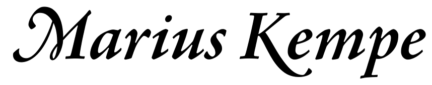

The WEBSITE of

graduate of Oxford & Cambridge; etc.;
comprising mathematical works, namely
A gallery of math activities, for parents & teachers,
and
Reading recommendations on mathematics,
and
Notes on books & translations of articles,
and
A small miscellany of links;
a s w e l l a s
A score of a children’s song.